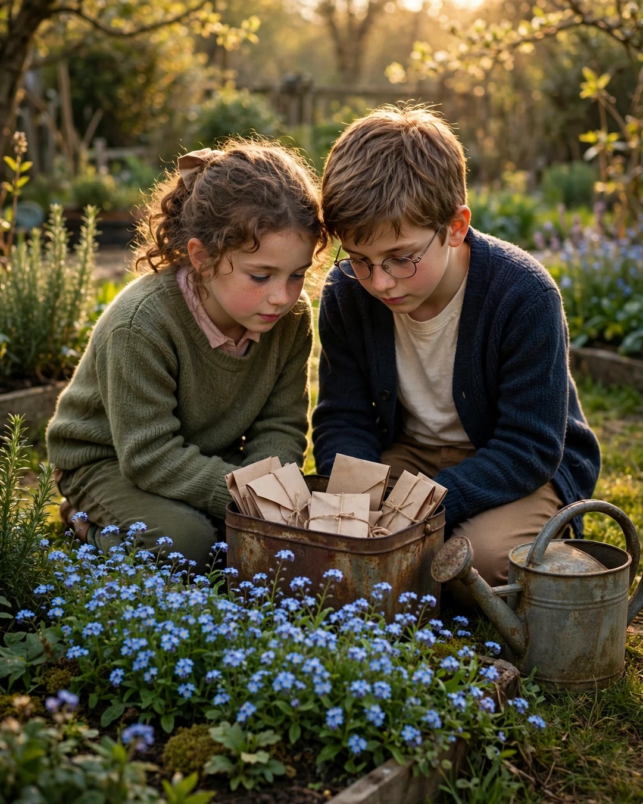

Grandpa's Garden
A Clipp Kaili original story

The spring after Grandpa died, the tomatoes came up anyway.
Nobody had planted them. Nobody had watered the beds or cleared the weeds or done any of the thousand small things he'd done every year since before I was born. But there they were in April, green and stubborn, pushing up out of the dark soil of his garden like he had just stepped inside for coffee and would be right back.
"He's still gardening," my little brother said. He was eleven and trying very hard not to cry. "He just moved."
That summer, our family did something we'd never done in all the years he was alive to ask us. We took over the garden. My mother, my brother, my cousins and me — we weeded and watered and argued about zucchini, and slowly, clumsily, we kept the whole thing alive. We were out there one Saturday, dividing up the last of the bean harvest, when my brother found the tin.
It was buried shallow, under the flat stone by the shed door. An old coffee tin, rusted at the rim. Inside were seed packets — dozens of them, rubber-banded by year, each one written on in Grandpa's shaky pencil.
And that's when we understood that the tomatoes were no accident. Neither was anything else in that garden. Grandpa, who had known for two years that his heart was failing and told none of us, had spent his last seasons preparing the garden to run without him — perennial beds, self-seeding tomatoes, an irrigation line on a timer.
He had also prepared the packets. For us.
"For Emma — the spring you turn sixteen. Sunflowers. You always did grow toward the light, even when the house was dark."
"For Jonah — plant these beans the year you think you're too grown for your grandpa's garden. Then cook them for somebody you love and see if you still think so."
"For my daughter — the roses your mother liked. I'm sorry I was stingy with words. I planted better than I talked."
There was one packet at the very bottom, newer than the rest, in an envelope instead of a seed sleeve. On the front, in pencil that shook more than the others, he'd written:
"For when I'm gone. Don't cry. Just water."
Inside were seeds we didn't recognize. We planted them in the center bed, where his chair used to sit, and we watered them all summer without knowing what we were growing.
They were forget-me-nots.
Hundreds of them. They came up blue and small and everywhere, spilling over the edges of the bed, into the paths, along the fence — a flower with a name like a message, planted by a man who knew exactly what he was doing.
Grandfathers don't leave gardens when they go.
They leave instructions for how to keep growing.
This story is a work of fiction, written to touch hearts and bring families closer.
← Back to all stories